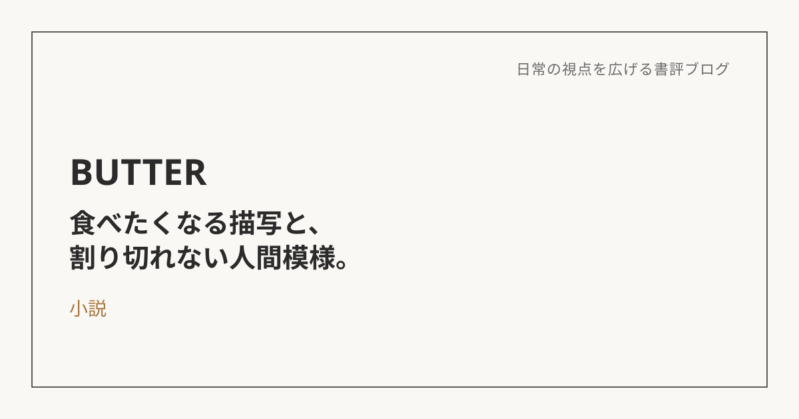
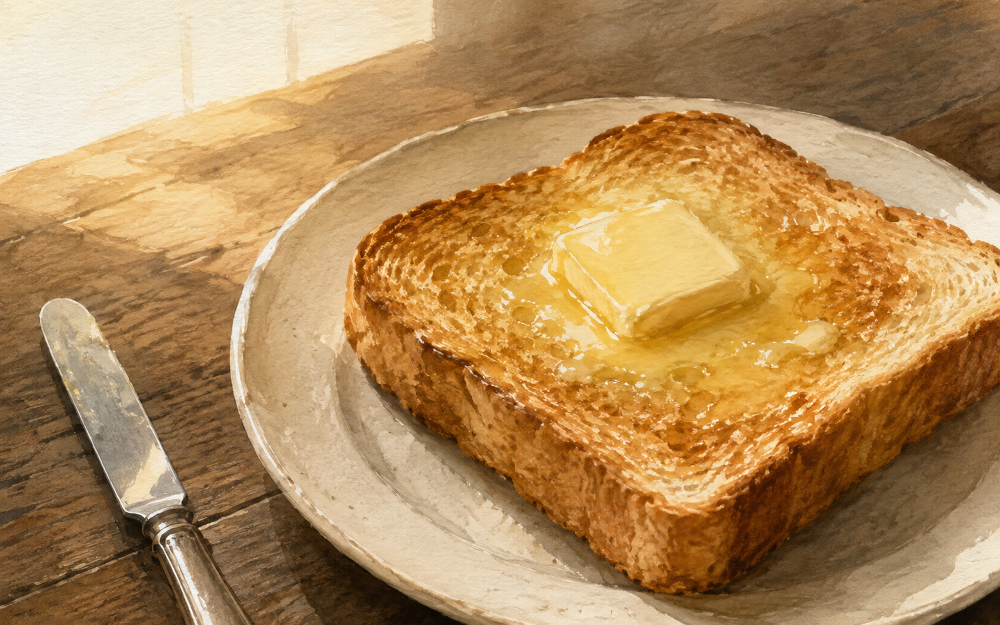

BUTTER：食の描写と、人間の割り切れなさ
この本について
柚木麻子による『BUTTER』は、連続不審死事件をめぐり、記者が容疑者の女性に取材を重ねていく物語。
事件の真相よりも、人間のねっとりとした部分を描いているところが印象に残った。建前と本音、優しさと残酷さ、好意と嫉妬。登場人物たちは、そうした矛盾する感情を抱えている。
誰かを「善い人」「悪い人」と単純に整理できるわけではなく、それぞれに理解できるところも、そうでないところもある。その割り切れなさが、読んでいて面白かった。
食の描写から、池波正太郎を思い出す
食べ物の描写で思い出したのが、池波正太郎だった。作品の雰囲気はまったく違うけれど、食べ物がまるで目の前にあるように感じられて、ついよだれが出そうになる。その五感に訴える描き方に、共通するものを感じた。
『BUTTER』では、特にバターの濃厚さや芳醇な香りが伝わってくる。読んでいるだけで食べたくなるような描写が、印象に残った。
ただ、おいしそうだと感じる一方で、作中の食には欲望や罪悪感、身体、他人からの視線といったものも絡んでいる。そのあたりは、自分が池波作品の食に感じる、生きる喜びや日常へ戻ってくるような感覚とは、少し違っていた。

タイトルの「BUTTER」に重ねて読んだこと
バターは濃厚で、香りがよく、おいしい。でも、たくさん食べれば重く、しつこく感じることもある。それが、この小説の人間関係にも、どこか似ている気がした。
好意や憧れ、友情、愛情、承認されたい気持ち。人を満たしてくれるものが、嫉妬や執着、依存、支配にもつながっていく。
バターを食べるときの「こんなものを食べていいのか」という罪悪感も、作中の「自分の欲望を満たしていいのか」「自分のために生きていいのか」という問いに重なって見えた。
熱で溶けて、ほかの食材へ染み込んでいくところも、人の感情が相手に影響していく様子に似ている。自分なりにそんなふうに重ねて読むと、『BUTTER』というタイトルがしっくりきた。
食の濃厚さと、人間の割り切れなさ
優しい人の中にも醜さがあり、身勝手な人の中にも理解できる部分がある。そういうところを、登場人物それぞれについて感じながら読んだ。
この作品では、人の矛盾した感情が、食べ物のおいしさや重たさと一緒に伝わってくるところがよかった。少ししつこく、後味にも何かが残る。その感じも含めて、バターのような小説だったと思う。
※本記事はNotionに書き溜めた読書メモをもとに、AIの編集サポートを受けて構成しています。